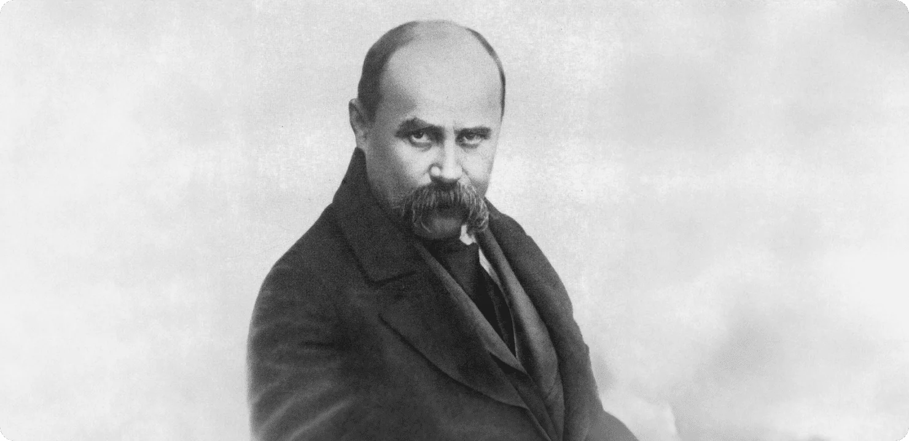

Taras Hryhorovych Shevchenko
Poet, artist and symbol of the national revival of Ukraine

About
Тарас Шевченко був українським поетом, художником і громадським діячем 19 століття, якого широко вважають засновником сучасної української літератури.
Він народився в кріпацтві 1814 року та здобув свободу у віці 24 років, що дозволило йому продовжувати навчання та творчу діяльність. Шевченко прославився своєю поетичною збіркою «Кобзар», де писав про свободу, несправедливість та боротьбу українського народу. Через свої політичні погляди його заарештували та він провів кілька років у засланні, де йому заборонили писати та малювати. Сьогодні його пам'ятають як потужний символ української ідентичності, культури та боротьби за свободу.
Taras Shevchenko was a Ukrainian poet, artist, and public figure of the 19th century, widely regarded as the founder of modern Ukrainian literature.
He was born into serfdom in 1814 and gained his freedom at the age of 24, which allowed him to pursue education and creative work. Shevchenko became famous for his poetry collection Kobzar, where he wrote about freedom, injustice, and the struggles of the Ukrainian people. Because of his political views, he was arrested and spent several years in exile, where he was forbidden to write and paint. Today, he is remembered as a powerful symbol of Ukrainian identity, culture, and the fight for freedom.